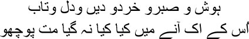

29
This baseless world is only a succession of haphazard events
Don’t harbour thoughts of building amidst these ruins
fter my return from Calcutta, seventeen years passed in one form of prison or another, Manto bhai. I was reminded of Mir sahib all the time. There he was, locked in a dark cell, his hands and feet trussed. And Mir sahib kept muttering:
Every leaf, every shrub, here knows my plight
The entire garden knows, but not the rose
Yes, Manto bhai, flowers are very cruel, they do not care for anyone else. They’re drunk on their own fragrance. Have you any idea why? Is it because their lives are so short-lived? Or because they fall to the ground so soon? We fall to the ground too, maybe we spend some more time on earth than flowers do, but we still go up to them, we caress them. But flowers don’t even spare a glance for us. Don’t you wish you could be born as a flower, Manto bhai? Bloom and spread your scent all night, and then fall to the earth at dawn. What an exquisite creation of the lord’s … this life as a flower … like a note that comes to life and instantly loses itself in another one. Do you know what life as a flower is like? Like a grain of melody cascading from mian Tansen’s throat … birth and death are fused within that grain, but you will not be able to forget it all your life. When I grew old and looked back on my life, Begum Falak Ara from Chaharbagh seemed to be just such a grain of melody; perhaps it had rolled out of a tawaif’s throat somewhere and then been lost, with only its light still being visible, like a dead star. And I became an old man, gazing at the lives of flowers.

It came but once, Manto bhai. Don’t ask for a list of all I lost in that single coming. Peace and patience, strength and health, youth and enterprise, and so much more … I lost them all. And what did it leave me in return? Only pain. A cry for help that split the night open before dying. See, there goes that cry, carrying an orphaned sher of Mirza Ghalib’s:
Yes, my brothers, love brought many of the pleasures of life, I found in it the cure to many agonies, but the pain that it left for me, oh lord, was one that even you don’t have a cure for. Why don’t you? The lord himself is agony. The older I grew, Manto bhai, the more I felt that Allah is the original agony. Ash-Shahid. What else but agony can be the witness to our lives?
No, don’t be restless, my brothers, I do remember that I have to tell you the details of Frazer sahib’s murder. You know what, I no longer care to tell stories from my own life. The more of myself I can erase, the more peaceful it is. I stopped writing ghazals for some time—but not because of the pressures of poverty and deprivation, nor because I felt that no one would read my work. I thought it was time to talk to myself; yes, believe me, Manto bhai, I killed my art with my own hands simply in order to genuflect at the feet of agony. I believe that an artist must identify that moment in life when he must assassinate his own art. Why has he really been born in this world? Not to create something, no. After Allah, no one can create anything. At best, we can copy his creations. All we can do is touch life. This gift of the lord’s is incomparable, Manto bhai. On a rainy day on my way back from Calcutta, I spotted a lonely hillock. It stood in the middle of a green stretch of land, and at its feet were several mossy graves. I wept. Life was so lonely, so beautiful, bathed in monsoon caresses. Late one night, a Sufi saint had said, weeping, ‘We live in the covered coffin of this world amidst such mistakes and ignorance. Can you hear them? When death will arrive to open the lid of the coffin, those of us with wings will fly off towards eternity, while those without wings will remain imprisoned. Do something before the lid is opened, friend, that can turn you into a bird and let you grow wings. Convert your arms into wings as soon as you can.’ I knew all this, Manto bhai, but I did not grow wings. And one day I crumpled to the ground, dead, my face buried in the ruins of Shahjahanabad.
Don’t be impatient, my brothers. Let this old man ramble on in his own way. I promise not to leave out any of the stories. So, Fraser sahib was murdered one night. He was shot dead near Kashmiri Gate. I turned to stone when I heard. Fraser sahib may have been the Resident of Delhi, but you could say our relationship was one between friends. He was different from the rest of the Englishmen. He thoroughly disliked his colleagues. He wanted to get to know our country, and didn’t care a hoot for rules and regulations. I borrowed hundreds of books from his library. We talked about a variety of things. He was the first one to tell me an extraordinary story about the Sufi saint Jami. Should I tell you the story, my brothers? Who is man? Jami had asked. A reflection of light. And this world? A wave in the infinite ocean. Can the light be separated from its reflection? Can the wave be separated from the ocean? Remember, this reflection and this wave are nothing but the light and the ocean. There was another factor behind my friendship with Fraser sahib. He used to assist Shamsuddin’s stepbrothers Aminuddin and Ziauddin in their litigation over property. And Shamsuddin, of course, couldn’t stand me.
Karim Khan was arrested on the charge of murdering Fraser sahib. He was an employee of Shamsuddin’s. The magistrate of Dilli was a friend of mine. Given the mountain of debt on my head, I couldn’t leave my house by daylight. Afraid of being arrested, I could only fly like an owl in the silence of the night to the magistrate sahib’s home. We discussed Fraser sahib’s murder. I never said anything about Shamsuddin. But the investigations revealed that it was he who had engaged Karim Khan to murder Fraser sahib. Both of them were hanged in public on a Shahjahanabad street. I didn’t watch the hanging, but I heard that the crowds spilled over to see it. There is no limit to man’s cruelty, Manto bhai. For the first time I realized that the English were just as barbaric. Who knows, maybe the history of civilization is nothing but the history of barbarity from another perspective.
Canards about me began to fly in Shahjahanabad soon after this. Apparently I was the one responsible for Shamsuddin’s hanging. As you sow, so you shall reap, but no one realized this. Even Umrao Begum asked me one day, ‘Did you tell the magistrate about Shamsuddin bhai, Mirza sahib?’
— Do you believe I did, Begum?
— Everyone says so.
— And that makes it true?
— I know …
— What do you know?
— That you cannot do such a thing.
— But still you asked.
— Forgive me.
— However great an enemy Shamsuddin might be, could I wish for his death?
— I made a mistake, Mirza sahib.
— What a group of people say can never be true, Begum. The truth can only be spoken by individuals. Collective opinion is inevitably a lie.
— Forgive me, Mirza sahib.
I sat there holding Umrao Begum’s hand. This was a new love. Die within it, Asad. Your path lies elsewhere. Be the sky, raze the prison walls with your axe. Flee. Be born in colour—right now. Die, and be silent. Silence means you’re dead. Your whole life you only ran away from silence. Look, the silent moon has risen in the sky now.
The label of Shamsuddin’s killer was stuck on me, my friends. For several years, his grave became a pilgrimage spot for the people of Dilli. And although many Englishmen’s graves were allowed to remain intact during the Sepoy Mutiny, Frazer sahib’s grave was demolished. People never judge a person by their individuality but only by their creed.
The British, too, viewed us Muslims suspiciously, and Hindus in a different way. Do you know why? Because it was the Hindus who had raised the flag of the renaissance—Bengali Hindus from Calcutta. Most of them were nothing but traders and moneylenders, Manto bhai. Sirajuddin sahib wrote several letters to me from Calcutta, and I replied. When I read his letters I realized that Calcutta was actually a two-faced city; it was the capital, after all, so there was a strong current of education and culture and everything else, but the soul that Nidhu-babu’s songs referred to no longer existed.
Shahjahanabad had no soul either. The royal court limped along. The British were gobbling up everything. They ate like sharks, Manto bhai. One day Kallu appeared in the diwankhana with a fakir. Fakir sahib gazed at me for a long time.
— What are you looking at? I asked.
— Bad times are coming, mian.
— How much worse can my life get?
— I’m not talking about you.
— About whom, then?
— Shahjahanabad will become a Karbala, mian.
‘Do you see the same Karbala in me by any chance?’ I smiled.
— Precisely. I see all of Shahjahanabad in you, mian. All the old houses and mosques in this city in ruins. People lynched on the streets. Women wandering about in rags. Snakes being born from goats’ wombs.
I burst into laughter. —When will all this take place, fakir sahib?
— All in good time. You’ll see it happening, mian, before you die.
— And what will happen to me?
— You will be the perfect being. Insaan-e-Kamil.
— Don’t make me laugh, fakir sahib. I have no insaaniyat. There’s nothing humane about me.
— No one is born humane, mian. You’ll attain perfect knowledge only after you’ve been burnt in the fire. Let me tell you a story.
Kallu leapt up. —Yes, let’s have a story, baba. Kallu nestled close to the fakir.
— Sal Abdullah went into a trance one day while telling his disciples about the Din. His eyes were red, he kept nodding his head, and his body twitched all the time. Ibn Salim asked him afterwards, ‘What was wrong with you, murshid sahib?’ Smiling, Abdullah said, ‘It’s not what you think. It wasn’t as though some power had possessed me. On the contrary, it was my weakness.’ Another disciple asked, ‘If this was weakness, what is power?’ After a short silence Abdullah answered, ‘When you are possessed by power, both your body and your heart turn calm.’ Get it, mian? Such a man is the perfect being.
— Baba …! Kallu gripped fakir sahib’s feet.
— Yes, my son?
— One more story, baba.
Kallu became absorbed in fakir sahib’s story; I went into my cell, the devil’s room. But you know what, during that period of voluntary imprisonment I succeeded in doing some work for myself. I rearranged my Urdu ghazal collection. I left out many of them. When I read them afresh, I realized that many of the ghazals could not be retained in the collection. Fazl-e-Haq was right, many of the ghazals had Farsi influences, although it wasn’t obvious at first. And by then I had understood that any ghazal that could not pierce your heart completely and instantly, like an arrow, had no value as a work of art. You know what, Manto bhai, we’re attracted by ornaments and ornate clothing when we’re young; we dress gaudily to show ourselves off. But there’s no contentment until beauty blooms within. I succeeded in compiling my Farsi essays as well. An anthology of five volumes was prepared. In the fifth volume I put in my letters to my friends. I named the collection The Melody Quintet. You’d have been vastly entertained by those letters. And you know what else? I was pleasantly surprised by my own Farsi prose; patting myself on the back, I’d say, mashallah, how well you’ve written mian, excellent. Why are you laughing, Manto bhai? Haven’t you ever patted yourself on the back? Haven’t you felt, after writing a story, oh my God, do I really have such talent within me? Have I been carrying it around all this time? What’s wrong with that, Manto bhai? Can an artist not give himself this small praise? You have to preserve this gentle fascination with yourself all your life.
Let me tell you about my letters to Alif Beg, my brothers, you’ll find them interesting. Alif sahib had a son in old age. He wrote to me saying, choose a name for my son, mian. I wrote back, I didn’t have to ponder in the slightest over a name for your son—it didn’t even take a minute. As soon as the name flashed in my head I wrote a poem:
In his old age Alif
Has had a beautiful son
I name him Hamza
As everyone knows
All Alifs grow up to be Hamzas
Isn’t that right, my brothers? Alif is a straight line and Hamza is a twisted one. Everyone’s body twists into a Hamza in old age.
I passed my days in my devil’s chamber, writing letters and making fun of people. Suddenly an English creditor named McPherson extracted an order from the court for me to pay back two hundred and fifty rupees. As luck would have it, I happened to have gone out that same day, and a British policeman arrested me at once. I was forced to go to jail. My friend Aminuddin bhai, the nawab of Loharu, saved me. Paying four hundred rupees on my behalf, he settled the case. Can this be called the life of a human being, my brothers? How long can you stay cooped up in a cell? If you go out, prison awaits you. Still I told myself with a smile:
Misery vanishes when you get used to misery
I suffered so much that it became easy
After Shamsuddin was hanged, the nawab’s rights to the kingdom of Ferozepur-Jhirkar were taken away. I used to get my pension from the British Raj. The same sixty-two rupees and eight annas. Those eight annas never stopped chasing me, Manto bhai. Everything in my destiny was fixed at half a rupee; I never received a full rupee’s worth. But despite the plight I was in, the company of certain people helped me survive. When Fazl-e-Haq sahib left Dilli, it was like a piece of my heart being destroyed. How many noble souls like him did Shahjahanabad have? The depth and extent of his leaning was matched by his sensitivity. The post he occupied was not meant for someone as qualified as him. Still he continued with the job. But the British would never let an opportunity for humiliation pass. They didn’t need opportunities; they always looked down at us from a height, as though surveying ants or worms. So they did not hesitate a moment before trampling us underfoot. Fazl-e-Haq was humiliated in precisely this manner. Being a man of integrity, he resigned. But he wasn’t a man to stay idle. Nawab Faiz Muhammad Khan took him to his own state with a monthly stipend of five hundred rupees. I remained in Dilli with a broken heart. I knew that Fazl-e-Haq sahib also bid goodbye to Dilli with a heart brimming over with tears. Even Emperor Bahadur Shah took off his shawl and put it around Fazl-e-Haq sahib’s shoulders, wiping his eyes as he said, ‘I know there is nothing I can do when you say goodbye. But when I have to wish you Godspeed, Khudahafiz, only God will know how painful it is for me to say those words.’ My closest friend, a true connoisseur of my ghazals, departed from Shahjahanabad carrying a burden of humiliation.
But another man came into my life. Could the lord abandon me entirely? I found a friend in Nawab Mustafa Khan Shaifta. Nine years younger than me, he belonged to Shahjahanabad. His ancestors came from Afghanistan. Very well-versed in Arabic and Farsi, he also wrote excellent ghazals. At one time, wine and women were the two arms of spring in Shaifta sahib’s life. He had an amorous relationship with the courtesan Ramzu. She was no run-of-the-mill courtesan, for she was as wealthy as she was well-educated.
I lost count of the number of ways in which Shaifta sahib helped me, my brothers. He was the only one to stand by me during the darkest hours of my life. I swear by the lord, he really did seem to be the soul of poetry, untarnished by calumny. Meanwhile, my mother died in Agra and my brother Yusuf was completely insane. I could not cope anymore. So I staked my own life once more. I set up a gambling den in my devil’s chamber. I had gambled earlier too; I had even had to pay a fine of five hundred rupees for it once. But this time I was determined to change my fortune with my winnings. Gambling was strictly prohibited in Dilli at the time. But since I counted important Englishmen among my friends, I thought no one could do anything to me. This presumption did me in, Manto bhai. The gambling became more frenetic by the day. I even made some money now and then. I told myself:
I know what goes on in heaven, but
Such fancies, Ghalib, are not bad for happiness